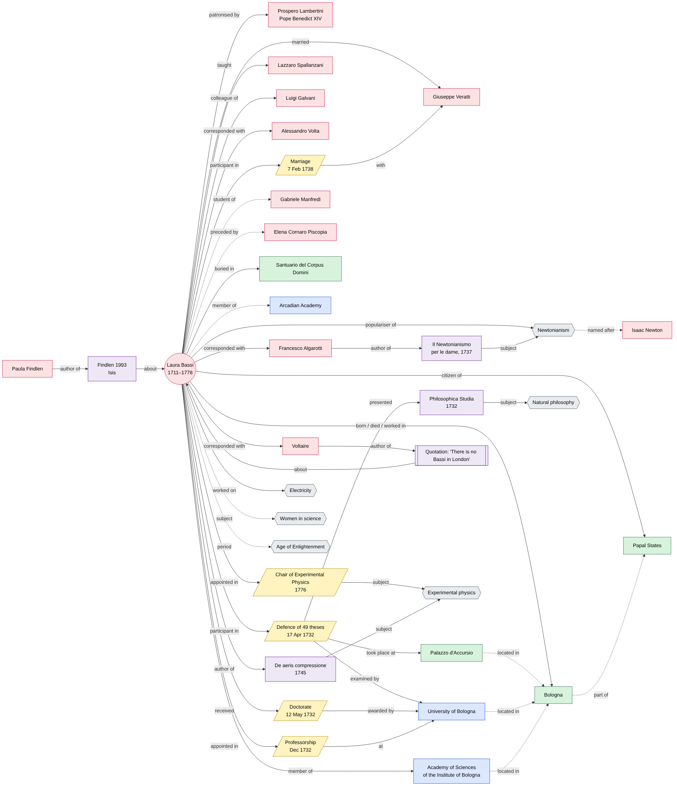
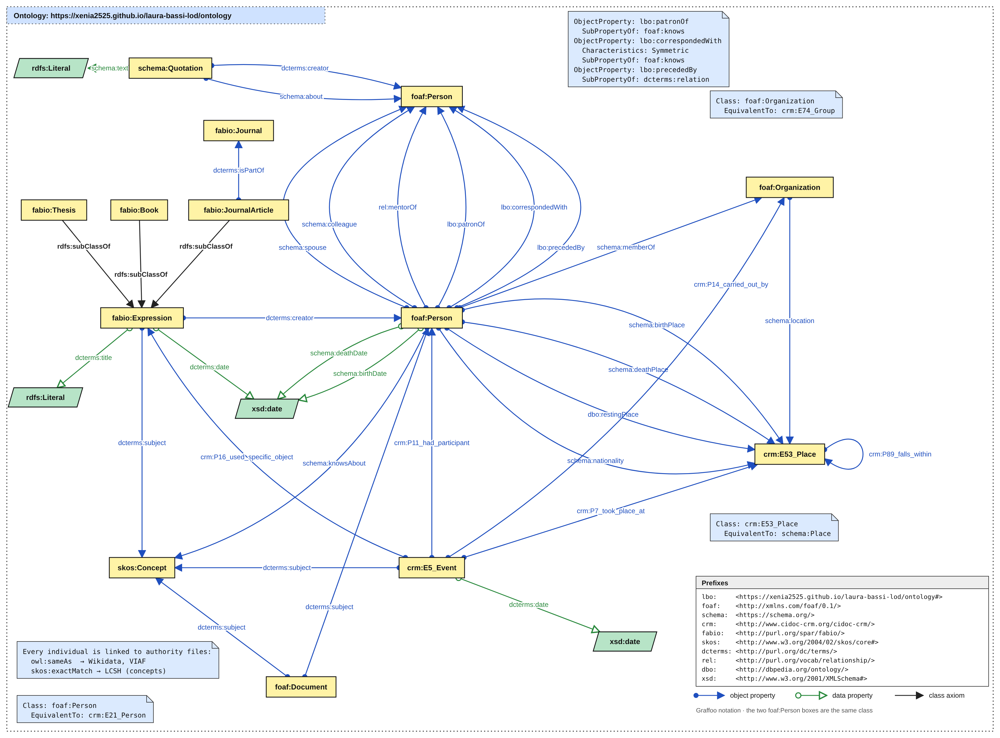

The page and its entities
The starting point is the English Wikipedia page Laura Bassi, frozen at revision 1372047911 of 30 August 2026 so that every annotation refers to a stable text.
Laura Bassi (1711–1778) suits a linked data project because her life is made of documented relations: a patron who became pope, a husband who was her laboratory partner, students, correspondents across Europe, academies, a sequence of dated appointments and a small body of Latin works. Almost all of these people and institutions already exist in Wikidata and VIAF, so the local data can be connected to the wider web.
Entities were chosen among those explicitly mentioned in the page, plus a few indirect ones taken from Wikidata (her membership of the Arcadian Academy, her burial place) and the works cited in its bibliography. Each one was reconciled by hand with Wikidata, VIAF and the Library of Congress; subjects were matched to Library of Congress Subject Headings.
Full table: docs/entities.csv
Theoretical model
Before choosing any vocabulary, the relations between Laura Bassi and the entities were drawn as a mind map and written out in natural language: who taught whom, who wrote what, where and when each event took place. Dotted lines mark indirect relations that the page does not state but that follow from Wikidata or from other entities, such as the link between Newtonianism and Isaac Newton.


Conceptual model
The theoretical model was then formalised by reusing existing ontologies. Only three properties had no existing equivalent (patronage, correspondence and "preceded by"); they are defined in a small local namespace, each as a sub-property of an existing one so that the data stays interoperable.
| Vocabulary | Used for | Why |
|---|---|---|
| CIDOC CRM | Events, places, participants | The ISO reference ontology for cultural heritage; its event-centred model fits the steps of her career. |
| FaBiO | Theses, treatise, books, articles | FRBR-based bibliographic types for her works and the bibliography of the page. |
| FOAF, schema.org | People, organisations, family and work relations | Widely adopted, aligned to CIDOC CRM with equivalence axioms. |
| SKOS | Subjects and fields of study | A small concept scheme matched to LCSH and Wikidata. |
| DC Terms | Creator, subject, date, title | The transversal metadata layer. |
| RELATIONSHIP, DBpedia | Teacher and student, burial place | Precise terms that the other vocabularies lack. |
| lbo: (new) | patronOf, correspondedWith, precededBy | No existing term fits; each is a sub-property of foaf:knows or dcterms:relation. |


XML/TEI encoding
The whole text of the page is encoded in TEI, section by section. People, places, organisations, dates, works and concepts are marked in the text and point, through @ref, to their description in the standOff: listPerson, listOrg, listPlace, listEvent, listBibl and listRelation. Textual phenomena are encoded too: Voltaire's quotation with q, the nickname "Bolognese Minerva" with soCalled, Latin and Italian titles with xml:lang.
Every relation carries in @ref the URI of the ontology property that expresses it. This single decision connects the TEI to the conceptual model and lets the RDF be generated without hard-coded mappings.
Source: data/laura_bassi.xml
From XML to HTML
An XSLT stylesheet, run from Python with lxml, turns the TEI into a reading edition. Each annotation becomes a link coloured by entity type; the standOff lists become cards with their authority links, a table of events and the bibliography.
From TEI to RDF
A Python script with rdflib reads the TEI and builds the RDF dataset. Every entry of the standOff becomes a typed resource with labels and owl:sameAs links to Wikidata, VIAF and LC; every relation becomes one triple per pair of participants. Authors without a local record get a URI minted from the MD5 hash of their name. The result is serialised as Turtle and JSON-LD.
The dataset can be queried. This SPARQL query asks for every event Laura Bassi took part in, with its place and the institution that carried it out; its answer, computed on the real file, is the timeline below.
SELECT ?label ?date ?place ?by WHERE {
?event crm:P11_had_participant lb:laura_bassi ;
rdfs:label ?label ; dcterms:date ?date .
OPTIONAL { ?event crm:P7_took_place_at/rdfs:label ?place }
OPTIONAL { ?event crm:P14_carried_out_by/rdfs:label ?by }
} ORDER BY ?dateAll the files
| File | What it is |
|---|---|
| docs/entities.csv | The entities with their Wikidata, VIAF and LC identifiers |
| models/theoretical_model.md | Theoretical model: relations in natural language and as a mind map (PNG, Mermaid source) |
| models/conceptual_model.md | Conceptual model: reused vocabularies and the mapping from the theoretical model |
| models/ontology.ttl | The ontology in OWL (Turtle) |
| models/conceptual_model_graffoo.svg | Graffoo diagram (generator) |
| data/laura_bassi.xml | The XML/TEI document |
| scripts/tei2html.xsl, tei2html.py | XML to HTML transformation |
| output/laura_bassi.html | The HTML produced by the transformation |
| scripts/tei2rdf.py | XML/TEI to RDF transformation |
| data/laura_bassi.ttl, .jsonld | The RDF dataset |
| scripts/build_site.py | Builds the data shown on this page from the files above |
To reproduce everything: pip install lxml rdflib, then run python scripts/tei2html.py, python scripts/tei2rdf.py and python scripts/build_site.py from the repository root.